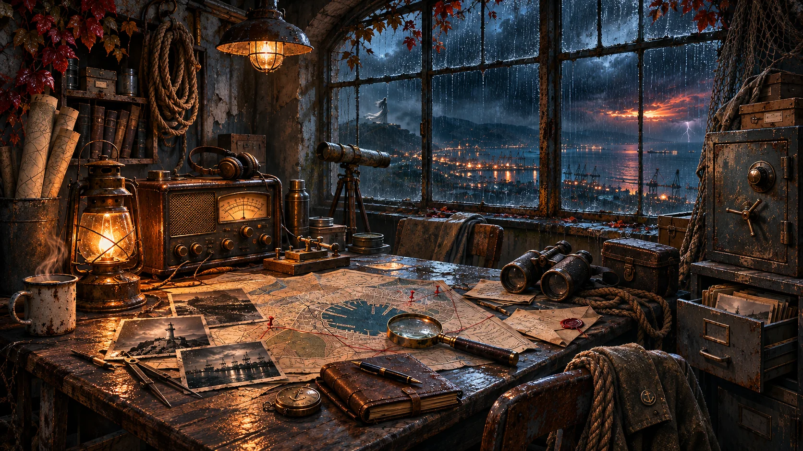

01 / ИССЛЕДУЙМесто происшествия
01 / ИССЛЕДУЙМесто происшествия ИНТЕРАКТИВНЫЙ ДЕТЕКТИВ ПО МОТИВАМ ГОРОДСКОЙ ЛЕГЕНДЫ
НОВОРОССИЙСК / ДЕЛО №001
НЕВЕСТА
СЕМИ ВЕТРОВ
В дождливый вечер на перевале появился силуэт женщины в белом. Камера зафиксировала его в 21:12. Но записи дежурных, следы машины и архивные документы рассказывают совсем другую историю.
НОВОРОССИЙСК · 44°43′ С. Ш. · ЧЁРНОЕ МОРЕПРОЛИСТАЙ НИЖЕ ↓
ДЕЛО №001 / КАК УСТРОЕНА ИГРА
Город становится
местом расследования.
Пять разных мест, свободный порядок исследования и единственная задача: собрать доказательства и найти объяснение тому, что произошло на перевале.
01 / ИССЛЕДУЙМесто происшествия 02 / СОПОСТАВЛЯЙМатериалы дела
02 / СОПОСТАВЛЯЙМатериалы дела
03 / РАСКРОЙСкрытую причину